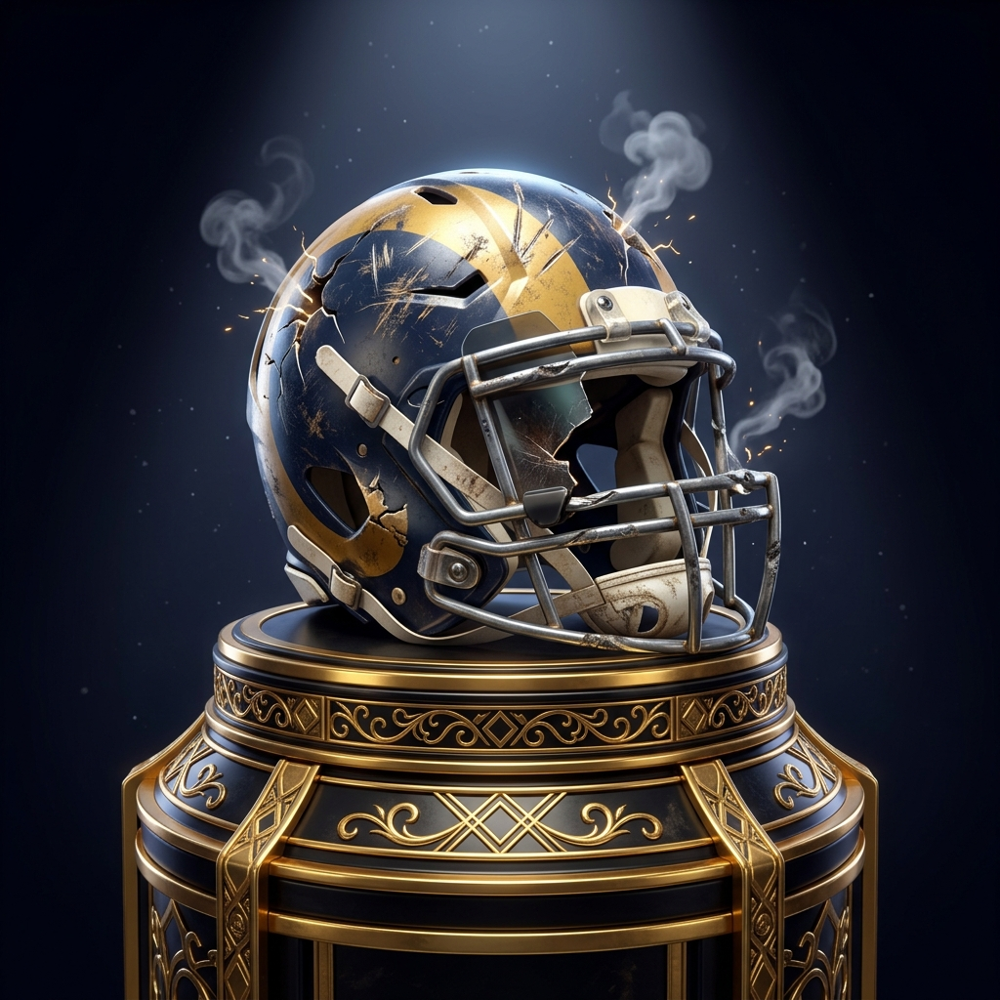

Halfway Through the Season: 8 of You Are the Spider-Man Pointing Meme, and I Am Already Dead
We have reached the midpoint of The Super Smash Alliance 10.0 regular season with zero trades executed, six consecutive teams deadlocked at 4-3, eight of twelve managers crammed within a single game of .500, Kyle Feeney sitting in 2nd place after making one waiver move since August, and your Head of Communications reporting from a 1-6 crater with a -261.64 point differential.
The 8-of-12 Parity Circus: Six Guys at 4-3, Eight Teams in a Phone Booth
Tap any team chip to jump straight to their roastOnly 6 playoff chairs exist, yet 8 teams sit at 4-3 or better—meaning two winning records are headed straight to the consolation bracket—while Seeds #2 through #9 (two-thirds of the league) sit within one Sunday swing of the six-way 4-3 pileup. Naturally, 0 trades have been made because everyone thinks their mediocre roster is one backup TE away.
Self-Roast First: The Autopsy of Bad Mother Tucker's (#12 • 1-6)
You cannot hurt a man who has been clinically deceased since Week 2Before anyone replies "focus on your own lineup, Josh," allow the Office of Communications to empty the clip on itself first:

- Peaked in Week 1: Dropped 153.64 on Owen in Week 1 to go 1-0, started measuring ring sizes, and immediately lost 6 straight games—finishing as the weekly low scorer 3 times in 4 weeks (100.88, 87.14, 93.46, plus 81.20 in Wk 6).
- Both Terrible AND Cursed: Opponents average a league-high 144.97 PPG (1,014.80 PA) against us—highlighted by Wills' 207.86-point thermonuclear execution in Week 2 (-106.98 margin) and Billy's 183.00 in Week 5. Yet we can't even cry schedule luck because we also rank dead last in scoring (753.16 PF, nearly 80 pts behind 11th and 346.66 behind Wills).
- Superflex Masterclass: Currently rolling out Tanner McKee (23.14 season pts) at QB1 while squatting permanently on #1 weekly resetting waivers. ESPN still gives us a 2.6% playoff chance—proof AI hallucination is very real.
15 Years of Alliance Lore (2012–2026): Team Names vs. Championships
Click any manager row to inspect every historical team name & title yearMidseason Receipts: Standings, All-Play & Schedule Luck
Click any column header to sort • Dashed emerald line = Top-6 Playoff Cutoff| Seed | Team (Manager) | Record | Streak | Points For | Points Against | Diff | All-Play | LuckWins | Moves | Playoff % |
|---|
All 12 Franchises, Roasted With Receipts
Filter by tier or tap your friend's name to isolate their crime sceneWeek 8 Chaos Watch
Upcoming slate entering the back half of the regular seasonWeek Box Scores
Sorted by highest-scoring matchupStandings Snapshot
Cumulative league table at the conclusion of this week| Rank | Team (Manager) | Record | Week Score | Season PF | Season PA | Diff |
|---|